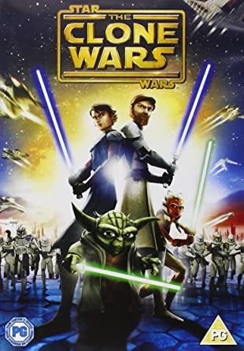
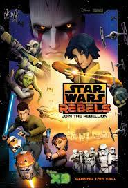
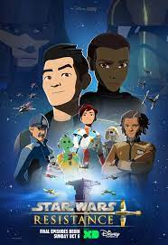
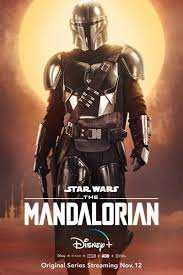
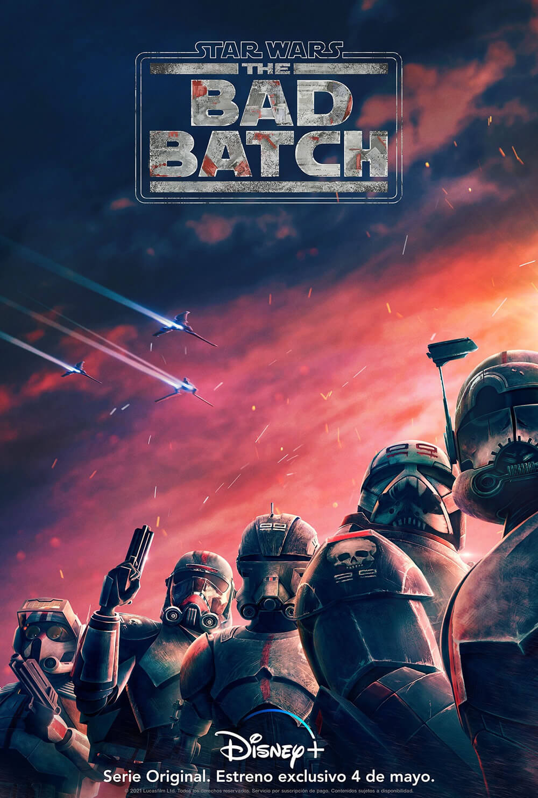
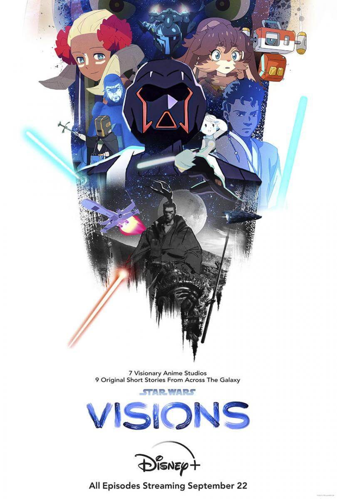

La primera serie de televisión semanal de Lucasfilm Animation narra las aventuras de Anakin Skywalker, Yoda, Obi-Wan Kenobi y otros personajes populares del universo de "Star Wars" durante la violencia de las "Guerras Clon" mientras el grupo minoritario de Caballeros Jedi lucha para restaurar la paz.
Star Wars: Clone Wars (2008-2021)
Star Wars: Rebels (2014-2018)
Las fuerzas imperiales ocupan un planeta remoto y están gobernando y arruinando las vidas de sus habitantes con mano de hierro. Un equipo inteligente a bordo del barco Fantasma se opone al Imperio, enfrentando a los villanos unos contra otros.
Poe Dameron recluta al joven piloto Kazuda Xiono para que se convierta en espía de la Resistencia y monitorear la creciente amenaza de la Primera Orden.
Star Wars: Resistance (2018-2020)
The Mandalorian (2019-)
Las aventuras de Mando, un pistolero solitario y cazarrecompensas que hace su camino a través de los confines más lejanos de la galaxia, lejos de la jurisdicción de la Nueva República.
Los miembros de un escuadrón de clones de élite con mutaciones genéticas encuentran su lugar en un galaxia que está en cambio permanente después de las Guerras Clon.
The Bad Batch(2021-)
Star Wars: Visions (2021-)
Siete estudios de animación japoneses aportan sus perspectivas únicas al universo de "Star Wars" a través de una serie de cortometrajes.
En las arenas de Tatoonie, el cazarrecompensas Boba Fett y el mercenario Fennec Shand navegan el inframundo de la Galaxia y la batalla por el antiguo territorio de Jabba el Hutt.